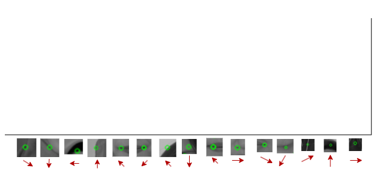
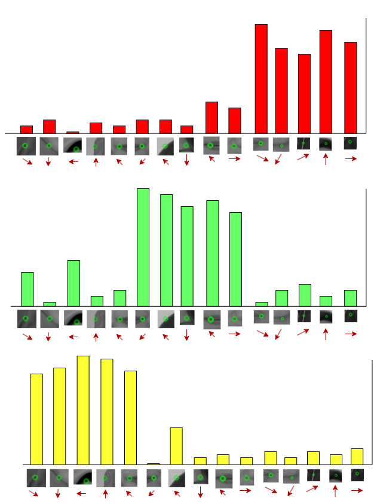

Sistem Klasifikasi Gambar
Sistem Klasifikasi Jenis Kendaraan dengan Fitur Berbasis SIFT, Bag of Visual Words, dan Klasifikasi SVM dan KNN
Desain Sistem
Dalam proyek ini, kita akan merancang sistem menggunakan metode ekstraksi fitur Scale-Invariant Feature Transform (SIFT) dan model klasifikasi Support Vector Machine (SVM). Desain umum meliputi:
- Preprocessing Data: Gambar dari dataset Citra Wajah akan diubah ke skala abu-abu dan dinormalisasi.
- Ekstraksi Fitur: Menggunakan metode SIFT untuk mengekstrak fitur dari setiap gambar.
- Klasifikasi Gambar: Setelah fitur diekstrak, SVM dan KNN akan digunakan untuk klasifikasi gambar.
- Pelatihan dan Pengujian: Model SVM akan dilatih menggunakan fitur dari gambar pelatihan dan kinerjanya akan diuji pada data pengujian.
Implementasi Sistem
Dalam proyek ini, kita akan merancang sistem menggunakan metode ekstraksi fitur Scale-Invariant Feature Transform (SIFT) dan model klasifikasi Support Vector Machine (SVM). Desain umum meliputi:
- Preprocessing Data: Gambar dari dataset Citra Wajah akan diubah ke skala abu-abu dan dinormalisasi.
- Ekstraksi Fitur: Menggunakan metode SIFT untuk mengekstrak fitur dari setiap gambar.
- Klasifikasi Gambar: Setelah fitur diekstrak, SVM dan KNN akan digunakan untuk klasifikasi gambar.
- Pelatihan dan Pengujian: Model SVM akan dilatih menggunakan fitur dari gambar pelatihan dan kinerjanya akan diuji pada data pengujian.
Latihan ini memandu Anda melalui langkah-langkah membuat sistem klasifikasi gambar sendiri dengan SIFT, BoVW, dan SVM. Anda akan:
- Memuat dan memproses dataset gambar Anda sendiri.
- Menerapkan metode SIFT pada gambar untuk mengekstrak fitur dan menggunakan BoVW untuk membentuk vektor fitur.
- Membuat dan melatih model SVM dan KNN Anda sendiri.
- Mengevaluasi performa model Anda pada data pengujian.
Latihan ini memberikan pemahaman yang lebih baik tentang bagaimana sistem klasifikasi gambar bekerja dengan menggunakan metode ekstraksi fitur dan model klasifikasi.
Akuisisi Data
Dataset yang digunakan terdiri dari 3 label yaitu label Kirei, Putri, dan Yudha dengan total sejumlah 353 citra berukuran 3024x3024 pixel.
Tiap label memiliki jumlah yang berbeda-beda, label Kirei sejumlah 107 citra, label Putri sejumlah 115 citra, dan label Yudha sejumlah 131 citra. Dataset yang terkumpul memiliki nilai eksposure yang bervariasi yaitu -2, -1, 0, 1, 2, sehingga setiap citra di dataset memiliki variasi nilai pixel yang cukup besar.
Mengimport Library yang dibutuhkan
import cv2
import numpy as np
import os
from sklearn.model_selection import train_test_splitMemuat Dataset

train_path = 'Dataset'
training_names = os.listdir(train_path) # Putri, Kirei, Yudha
image_paths = []
image_classes = []
class_id = 0
def imglist(path):
return [os.path.join(path, f) for f in os.listdir(path)]
for training_name in training_names:
dir = os.path.join(train_path, training_name) # Menggabungkan train_path dan training_name; Dataset/Putri, Dataset/Kirei, Dataset/Yudha
class_path = imglist(dir)
image_paths+=class_path
image_classes+=[class_id]*len(class_path)
class_id+=1Hasil dari Kode diatas adalah list PATH seperti ../folder/sub-folder/file-citra (Dataset/Putri/img1; Dataset/Putri/img2; Dataset/Putri/img3; dst) yang nanti akan digunakan saat membaca setiap citra pada tahap berikutnya.
Fitur Ekstraksi
Mengekstrak Fitur Menggunakan Algoritma SIFT
# Inisialisasi variabel untuk menyimpan deskriptor dari Algoritma SIFT
des_list = []
# Buat Fitur Ekstraksi dan Objek Deteksi Keypoints
sift = cv2.SIFT_create()
for image_path in image_paths:
im = cv2.imread(image_path) # Membaca Citra berdasarkan PATH yang telah dibuat sebelumnya
kpts, des = sift.detectAndCompute(im, None)
des_list.append((image_path, des)) # Menyimpan fitur yang telah dideteksi kedalam variabel des_list=[]Setelah Menjalankan Algoritma SIFT, kita akan mendapatkan Feature Feature pada setiap gambar.
Stack Fitur untuk Melakukan perhitungan Histogram
descriptors = des_list[0][1]
for image_path, descriptor in des_list[1:]:
descriptors = np.vstack((descriptors, descriptor))
descriptors_float = descriptors.astype(float) # K-Means hanya bekerja pada tipe data float, Convert descriptor ke float
Tahap Bag of Visual Word
Dilakukan perhitungan Histogram Menggunakan Algoritma K-Means.
# Gunakan K-Means untuk Melakukan perhitungan Histogram (BoVW)
from scipy.cluster.vq import kmeans, vq
k = 150
voc, variance = kmeans(descriptors_float, k, 1)
im_features = np.zeros((len(image_paths), k), "float32")
for i in range(len(image_paths)):
words, distance = vq(des_list[i][1],voc)
for w in words:
im_features[i][w] += 1
Perhitungan Histogram akan menjadi ciri-ciri dari setiap kelasnya, seperti pada ilustrasi. Histogram 1 akan menjadi ciri-ciri dari kelas Yudha, Histogram 2 akan menjadi ciri-ciri dari kelas Kirei, Histogram 3 akan menjadi ciri-ciri dari kelas Putri.
Split Data menjadi Train dan Test
X_train, X_test, y_train, y_test = train_test_split(im_features, image_classes, test_size=0.2, random_state=42, stratify=image_classes)Algoritma Klasifikasi
Lakukan Klasifikasi Menggunakan Algoritma SVM dan KNN, kemudian simpan model klasifikasi kedalam bentuk pickel.
Support Vector Machine(SVM)
from sklearn.svm import SVC
clf = SVC(kernel='linear', C=1.0, max_iter=500)
clf.fit(X_train, np.array(y_train))
# Lakukan prediksi pada data uji
y_pred = clf.predict(X_test)
# Mencetak laporan klasifikasi
report = classification_report(y_test, y_pred)
print(report)
#Simpan Model Sistem Klasifikasi kedalam bentuk Pickel
filename = "svm_model_SIFT.pkl"
with open(filename, "wb") as f:
pickle.dump(knn, f)K-Nearest Neighbors(KNN)
from sklearn.neighbors import KNeighborsClassifier
from sklearn.metrics import classification_report
import pickle
knn = KNeighborsClassifier(n_neighbors=3)
knn.fit(X_train, y_train)
# Lakukan prediksi pada data uji
y_pred = knn.predict(X_test)
# Mencetak laporan klasifikasi
report = classification_report(y_test, y_pred)
print(report)
#Simpan Model Sistem Klasifikasi kedalam bentuk Pickel
filename = "knn_model_SIFT.pkl"
with open(filename, "wb") as f:
pickle.dump(knn, f)Evaluasi Sistem
Evaluasi sistem melibatkan perbandingan antara kelas sebenarnya dan kelas yang diprediksi oleh model.
- Evaluasi In-Sample: Selama proses pelatihan, akurasi pada data pelatihan akan dihitung.
- Evaluasi Out-of-Sample: Setelah model dilatih, akurasi pada data pengujian akan dihitung.
Support Vector Machine
import matplotlib.pyplot as plt
from sklearn.metrics import ConfusionMatrixDisplay, classification_report
# Membuat confusion matrix
cm = confusion_matrix(y_test, y_pred)
# Mencetak confusion matrix
print("Confusion Matrix:")
print(cm)
# Memplot confusion matrix
labels = np.unique(image_classes)
display = ConfusionMatrixDisplay(confusion_matrix=cm, display_labels=labels)
display.plot(cmap=plt.cm.Blues)
plt.title("Confusion Matrix")
plt.xlabel("Predicted Label")
plt.ylabel("True Label")
plt.show()K-Nearest Neighbors(KNN)
import matplotlib.pyplot as plt
from sklearn.metrics import confusion_matrix, classification_report
# Mencetak confusion matrix
print("Confusion Matrix:")
# Membuat confusion matrix
cm = confusion_matrix(y_test, y_pred)
print(cm)
# Memplot confusion matrix
labels = np.unique(image_classes)
fig, ax = plt.subplots()
im = ax.imshow(cm, interpolation='nearest', cmap=plt.cm.Blues)
ax.figure.colorbar(im, ax=ax)
ax.set(xticks=np.arange(cm.shape[1]),
yticks=np.arange(cm.shape[0]),
xticklabels=labels, yticklabels=labels,
title="Confusion Matrix",
ylabel="True label",
xlabel="Predicted label")
plt.show()